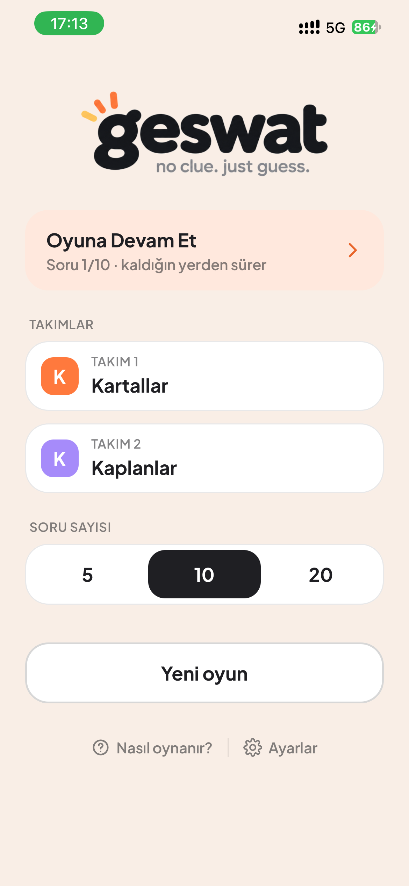
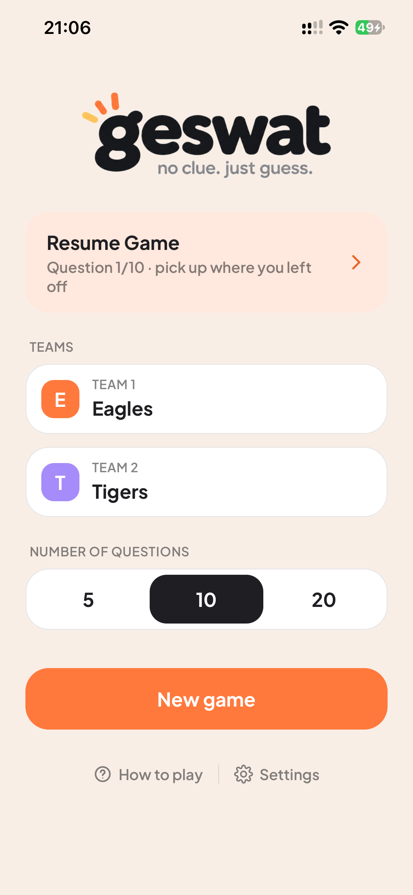
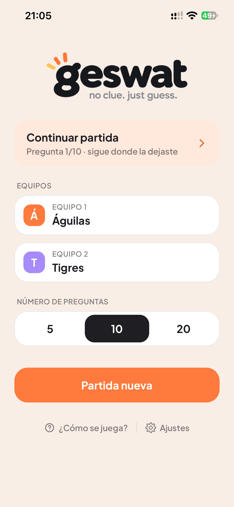
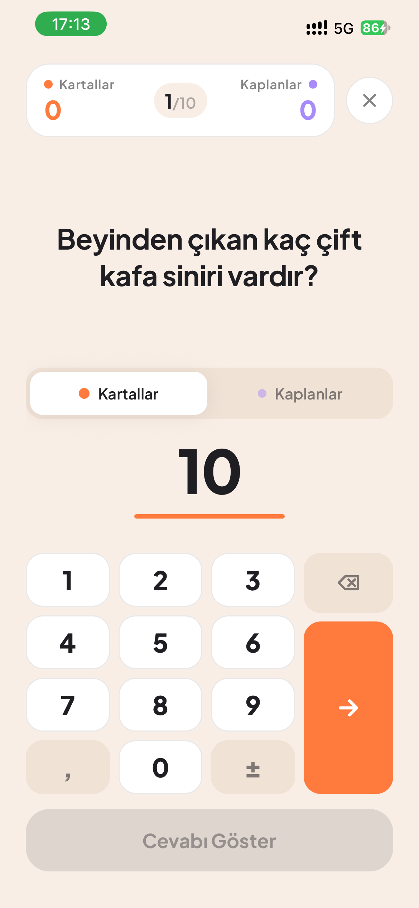
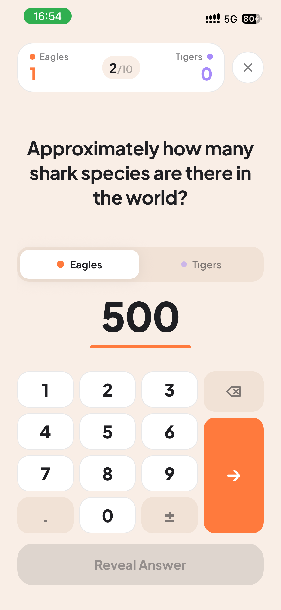
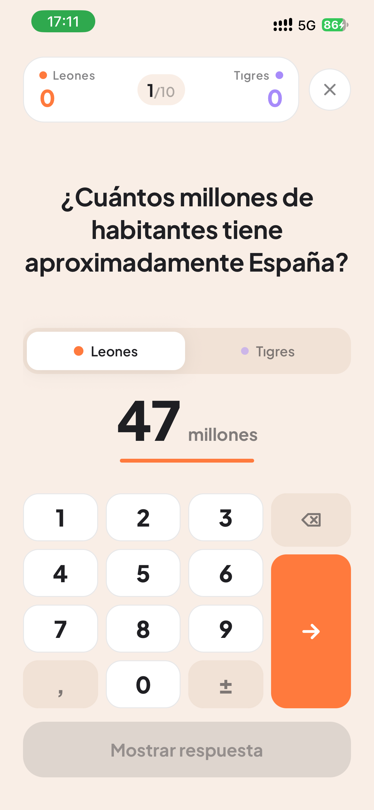
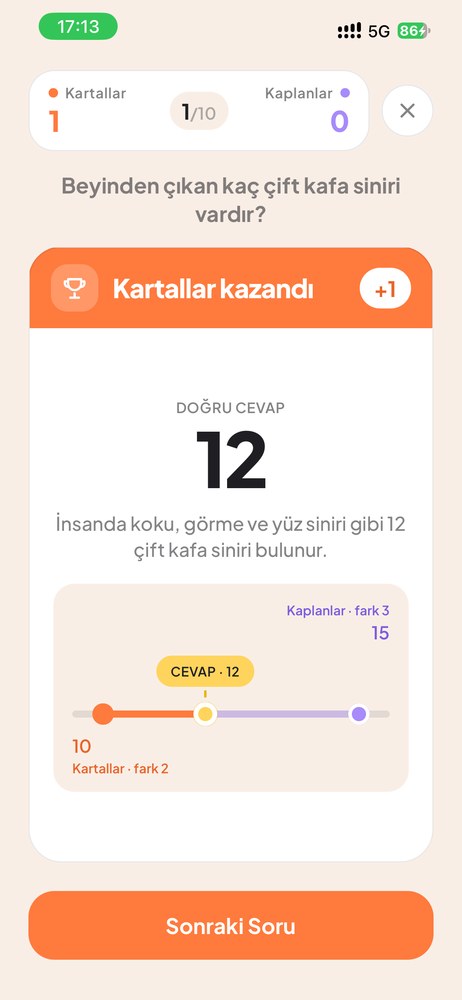
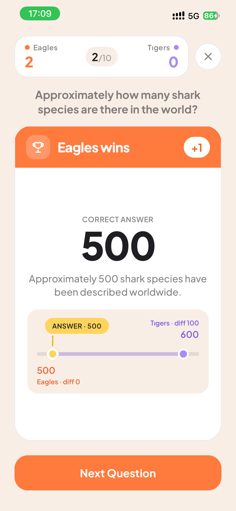
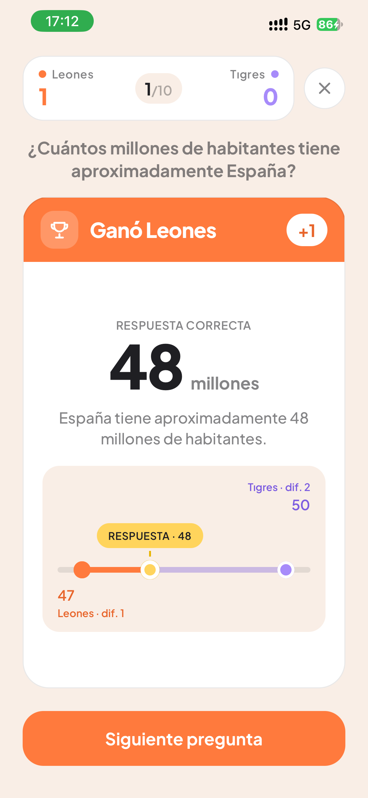

Bilmesen de olur.
Tahmin et.
İki takım, tek telefon, bir soru. Cevap bir sayı; doğruya en yakın tahmin puanı alır. İnternet gerekmez.
No clue.
Just guess.
Two teams, one phone, one question. Every answer is a number; the closest guess scores. No internet needed.
Ni idea.
Adivina.
Dos equipos, un teléfono, una pregunta. Cada respuesta es un número; gana la estimación más cercana. Sin internet.
Tek telefon, iki takım
Telefonu elden ele verin. Her takım yalnızca kendi tahminini görür; cevap açılınca ikisi de ortaya çıkar.
One phone, two teams
Pass the phone around. Each team only sees its own guess until the answer is revealed.
Un teléfono, dos equipos
Pásense el teléfono. Cada equipo ve solo su estimación hasta que se revela la respuesta.
Sayı doğrusunda cevap
Doğru cevap ve iki tahmin aynı çizgide. Kim daha yakın, neden kazandı: bir bakışta.
Answers on a number line
The correct answer and both guesses on one line. Who was closer, and why, at a glance.
La respuesta en una recta
La respuesta correcta y las dos estimaciones en la misma línea. Quién estuvo más cerca, de un vistazo.
Her dilde kendi soruları
Doğa, bilim, tarih, coğrafya, spor, kültür, teknoloji, insan vücudu. Türkçe, İngilizce ve İspanyolca’da yerel sorular.
Local questions in every language
Nature, science, history, geography, sports, culture, technology, the human body. Native questions in English, Turkish and Spanish.
Preguntas locales en cada idioma
Naturaleza, ciencia, historia, geografía, deportes, cultura, tecnología y cuerpo humano. Preguntas propias en español, inglés y turco.
Nasıl oynanır?How to play¿Cómo se juega?
Takımları kur
İsimleri yazın, soru sayısını seçin: 5, 10 ya da 20.
Set up the teams
Type your names and pick 5, 10 or 20 questions.
Formen los equipos
Escriban los nombres y elijan 5, 10 o 20 preguntas.



Tahmin edin
Soru bir sayı ister. İki takım da sırayla tahminini girer.
Make your guesses
Every question asks for a number. Both teams enter a guess in turn.
Hagan su estimación
Cada pregunta pide un número. Los dos equipos escriben su estimación por turnos.



En yakın kazanır
Doğru cevaba en yakın takım 1 puan alır. Eşit uzaklıkta ikisi de alır.
Closest wins
The team closest to the answer scores 1 point. Equal distance? Both score.
Gana el más cercano
El equipo más cercano a la respuesta suma 1 punto. A igual distancia, suman los dos.



Destek
Takıldığın bir şey mi var? Önce sık sorulanlara bak; bulamazsan bize yaz, en kısa sürede dönelim.
Support
Stuck on something? Check the FAQ first; if that doesn't help, write to us and we'll get back to you.
Soporte
¿Algo no funciona? Mira primero las preguntas frecuentes; si no encuentras la respuesta, escríbenos.
Bize ulaş
Destek, öneri ve hata bildirimleri için bize yaz. Butonlar kendi e‑posta uygulamanı açar.
Contact us
Write to us for support, suggestions and bug reports. The buttons open your own mail app.
Contáctanos
Escríbenos para soporte, sugerencias y errores. Los botones abren tu propia app de correo.
Sık sorulanlarFAQPreguntas frecuentes
Oyun nasıl oynanır?
İki takım aynı telefonda oynar. Her soru sayısal bir cevap ister; iki takım da sırayla tahminini girer, sonra “Cevabı Göster”e dokunulur. Doğru cevaba en yakın takım 1 puan alır; eşit uzaklıkta ikisi de alır. Oyun sonunda puanı yüksek olan kazanır.
İnternet gerekiyor mu?
Hayır. Sorular uygulamanın içindedir; oyun tamamen çevrimdışı çalışır.
Dili nasıl değiştiririm?
Ayarlar → Dil. “Otomatik” cihaz dilini kullanır (Türkçe, İngilizce veya İspanyolca; diğer dillerde İngilizce). Dil değişince yeni oyunlar o dilin soru havuzundan gelir; her dilin kendi yerel soruları vardır.
Yarım kalan oyunu nasıl sürdürürüm?
Ana ekranda “Oyuna Devam Et” kartına dokun. Yeni oyun başlatmak önceki oyunun yerine geçer.
Ondalıklı veya negatif sayı girebilir miyim?
Evet. Tuş takımındaki virgül (İngilizcede nokta) ondalık, ± tuşu işaret içindir.
Bir cevap yanlış görünüyor.
Bazı cevaplar yaklaşık değerlerdir ve kaynağa göre değişebilir. Yine de hatalı olduğunu düşündüğün soruyu “Hata bildir” ile gönder; soru metnini yazman yeterli.
Verilerim nerede?
Hepsi cihazında: takım adları, tercihler, devam eden oyun. Sunucuya hiçbir şey gönderilmez. Ayrıntı için aşağıdaki Gizlilik bölümüne bak.
How do I play?
Two teams share one phone. Every question asks for a number; both teams enter a guess in turn, then tap “Reveal Answer”. The team closest to the correct answer scores 1 point; at equal distance both score. Most points at the end wins.
Do I need internet?
No. Questions ship inside the app; the game is fully offline.
How do I change the language?
Settings → Language. “Automatic” follows your device language (Turkish, English or Spanish; other languages fall back to English). New games draw from that language’s question bank, which includes its own local questions.
How do I resume an unfinished game?
Tap the “Resume Game” card on the home screen. Starting a new game replaces the previous one.
Can I enter decimals or negative numbers?
Yes. The keypad’s decimal key and the ± key handle both.
An answer looks wrong.
Some answers are approximate and vary by source. If you think one is wrong, send it with “Report a bug”; the question text is enough.
Where is my data?
All on your device: team names, preferences, the game in progress. Nothing is sent to a server. See the Privacy section below.
¿Cómo se juega?
Dos equipos comparten un teléfono. Cada pregunta pide un número; los dos equipos escriben su estimación por turnos y luego tocan “Mostrar respuesta”. El equipo más cercano suma 1 punto; a igual distancia, suman los dos. Al final gana quien tenga más puntos.
¿Necesito internet?
No. Las preguntas están dentro de la app; el juego funciona sin conexión.
¿Cómo cambio el idioma?
Ajustes → Idioma. “Automático” sigue el idioma del dispositivo (turco, inglés o español; otros idiomas usan inglés). Las partidas nuevas usan el banco de preguntas de ese idioma, con sus propias preguntas locales.
¿Cómo continúo una partida?
Toca la tarjeta “Continuar partida” en la pantalla principal. Empezar una partida nueva reemplaza la anterior.
¿Puedo escribir decimales o negativos?
Sí. La tecla de coma del teclado numérico y la tecla ± sirven para eso.
Una respuesta parece incorrecta.
Algunas respuestas son aproximadas y varían según la fuente. Si crees que una está mal, envíala con “Informar un error”; basta con el texto de la pregunta.
¿Dónde están mis datos?
Todo en tu dispositivo: nombres de equipos, preferencias y la partida en curso. No se envía nada a un servidor. Consulta la sección de Privacidad más abajo.
Gizlilik Politikası
geswat hesap istemez, veri toplamaz ve sunucuya hiçbir şey göndermez. Aşağıda cihazında ne tutulduğu anlatılıyor.
Son güncelleme: 20 Ekim 2026Cihazında kalan bilgiler
Geswat, hesap oluşturmadan oynanan bir tahmin oyunudur. Takım isimleri, soru sayısı, devam eden oyun ve tahminler, daha önce seçilen sorular, dil ve titreşim tercihi cihazında saklanır. Bu bilgiler oyunu sürdürmek, tercihlerini hatırlamak ve soru tekrarlarını azaltmak için kullanılır.
Çevrimdışı oyun
Sorular uygulamanın içindedir; oynamak için internet bağlantısı gerekmez. Mevcut oyun sürümünde reklam, hesap sistemi veya uygulama içi analiz hizmeti bulunmaz. Oyun kayıtlarını bir sunucuya göndermeyiz.
Saklama ve silme
Yeni oyun başladığında önceki oyun kaydı değiştirilir. Takım isimleri ve tercihlerin sonraki oyunlar için hatırlanır. Uygulamayı cihazından sildiğinde uygulamanın yerel verileri de kaldırılır. İşletim sisteminin yedekleme ve geri yükleme özellikleri, cihaz ayarlarına bağlı olarak bu verileri kapsayabilir.
Cihaz ve platform hizmetleri
Apple’ın işletim sistemi, App Store ve isteğe bağlı tanılama hizmetleri kendi gizlilik uygulamalarına tabidir. Bu metin Geswat’ın oyun içindeki veri kullanımını açıklar.
İletişim
Sorular için: hello@brocan.co.
Privacy Policy
geswat needs no account, collects no data and sends nothing to a server. Here is what stays on your device.
Last updated: 20 October 2026What stays on your device
Geswat is a guessing game played without an account. Team names, the number of questions, the game in progress and its guesses, previously shown questions, and your language and haptics preferences are stored on your device. They are used to continue the game, remember your preferences and reduce repeated questions.
Offline play
Questions ship inside the app; no internet connection is needed to play. The current version has no ads, no accounts and no in-app analytics. Game data is never sent to a server.
Storage and deletion
Starting a new game replaces the previous saved game. Team names and preferences are remembered for later games. Deleting the app removes its local data. Depending on your device settings, operating-system backup and restore features may include this data.
Device and platform services
Apple’s operating system, the App Store and optional diagnostics services are subject to their own privacy practices. This text describes Geswat’s in-game data use only.
Contact
Questions: hello@brocan.co.
Política de privacidad
geswat no requiere cuenta, no recopila datos y no envía nada a un servidor. Esto es lo que se guarda en tu dispositivo.
Última actualización: 20 de octubre de 2026Lo que se queda en tu dispositivo
Geswat es un juego de estimaciones que se juega sin cuenta. Los nombres de los equipos, el número de preguntas, la partida en curso y sus estimaciones, las preguntas ya mostradas y tus preferencias de idioma y vibración se guardan en tu dispositivo. Se usan para continuar la partida, recordar tus preferencias y reducir las preguntas repetidas.
Juego sin conexión
Las preguntas están dentro de la app; no se necesita internet para jugar. La versión actual no tiene anuncios, cuentas ni análisis dentro de la app. Los datos de la partida nunca se envían a un servidor.
Almacenamiento y borrado
Empezar una partida nueva reemplaza la partida guardada anterior. Los nombres de los equipos y las preferencias se recuerdan para las siguientes partidas. Al eliminar la app se eliminan sus datos locales. Según la configuración del dispositivo, las copias de seguridad del sistema pueden incluir estos datos.
Servicios del dispositivo y la plataforma
El sistema operativo de Apple, el App Store y los servicios opcionales de diagnóstico tienen sus propias prácticas de privacidad. Este texto describe solo el uso de datos de Geswat dentro del juego.
Contacto
Preguntas: hello@brocan.co.
Kullanım Koşulları
geswat eğlence amaçlı bir tahmin oyunudur. Uygulamayı kullanarak aşağıdaki koşulları kabul etmiş olursun.
Son güncelleme: 20 Ekim 2026Oyun hakkında
Geswat eğlence amaçlı bir tahmin oyunudur. İki takım aynı cihazda oynar. Her soruda doğru cevaba en yakın tahmin 1 puan alır; eşit uzaklıkta iki takım da 1 puan alır. Oyun sonunda en yüksek puana sahip takım kazanır; eşit puanlarda oyun berabere biter.
Sorular ve cevaplar
Bazı cevaplar yaklaşık değerlerdir. Bilgiler kullanılan kaynağa, ölçüm yöntemine veya zamana göre farklılık gösterebilir. Puanlama, uygulamada o soru için kayıtlı cevap üzerinden yapılır. Sorular ve açıklamalar profesyonel tavsiye amacı taşımaz.
Yerel oyun kayıtları
Oyun ilerlemesi cihazda tutulur. Yeni oyun başlatmak önceki oyunun yerine geçer. Uygulamanın silinmesi veya cihaz verilerinin kaybı oyun kayıtlarını etkileyebilir.
Üçüncü taraf bileşenler
Uygulamada kullanılan açık kaynak bileşenler ve yazı tipleri kendi lisanslarına tabidir. İlgili bildirimleri Ayarlar → Lisanslar bölümünde okuyabilirsin.
Lisans sözleşmesi
Uygulama App Store üzerinden dağıtılır ve Apple’ın standart Son Kullanıcı Lisans Sözleşmesi’ne (EULA) tabidir: apple.com/legal/…/stdeula.
İletişim
Sorular için: hello@brocan.co.
Terms of Use
geswat is a guessing game made for fun. By using the app you agree to the terms below.
Last updated: 20 October 2026About the game
Geswat is a guessing game made for fun. Two teams play on the same device. In each question the guess closest to the correct answer earns 1 point; at equal distance both teams earn 1 point. The team with the highest score at the end wins; equal scores mean a tie.
Questions and answers
Some answers are approximate. Figures may vary by source, measurement method or time. Scoring uses the answer stored in the app for that question. Questions and explanations are not professional advice.
Local game data
Game progress is kept on the device. Starting a new game replaces the previous one. Deleting the app or losing device data may affect saved games.
Third-party components
Open-source components and fonts used in the app are subject to their own licenses. You can read the notices under Settings → Licenses.
License agreement
The app is distributed through the App Store and is subject to Apple’s standard End User License Agreement (EULA): apple.com/legal/…/stdeula.
Contact
Questions: hello@brocan.co.
Términos de uso
geswat es un juego de estimaciones hecho para divertirse. Al usar la app aceptas los términos siguientes.
Última actualización: 20 de octubre de 2026Sobre el juego
Geswat es un juego de estimaciones hecho para divertirse. Dos equipos juegan en el mismo dispositivo. En cada pregunta, la estimación más cercana a la respuesta correcta suma 1 punto; a igual distancia, los dos equipos suman 1 punto. Al final gana el equipo con más puntos; con puntos iguales, la partida termina en empate.
Preguntas y respuestas
Algunas respuestas son aproximadas. Los datos pueden variar según la fuente, el método de medición o el momento. La puntuación se calcula con la respuesta guardada en la app para esa pregunta. Las preguntas y explicaciones no son asesoramiento profesional.
Datos locales de la partida
El progreso de la partida se guarda en el dispositivo. Empezar una partida nueva reemplaza la anterior. Eliminar la app o perder los datos del dispositivo puede afectar a las partidas guardadas.
Componentes de terceros
Los componentes de código abierto y las fuentes usados en la app tienen sus propias licencias. Puedes leer los avisos en Ajustes → Licencias.
Acuerdo de licencia
La app se distribuye a través del App Store y está sujeta al Acuerdo de licencia de usuario final (EULA) estándar de Apple: apple.com/legal/…/stdeula.
Contacto
Preguntas: hello@brocan.co.